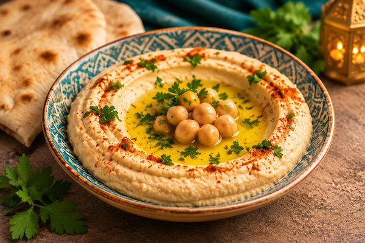
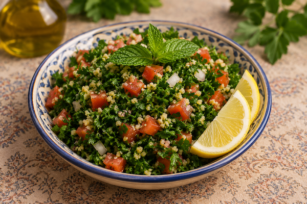
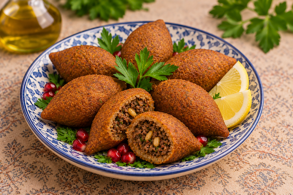

Libanesisk restaurang i Malmö
Upptäck våra traditionella libanesiska förrätter.

Krämig kikärtsröra med tahini, citron och olivolja.
79 kr

Fräsch sallad med persilja, tomat, bulgur och citron.
89 kr

Friterade bulgurbollar fyllda med kryddat kött.
99 kr